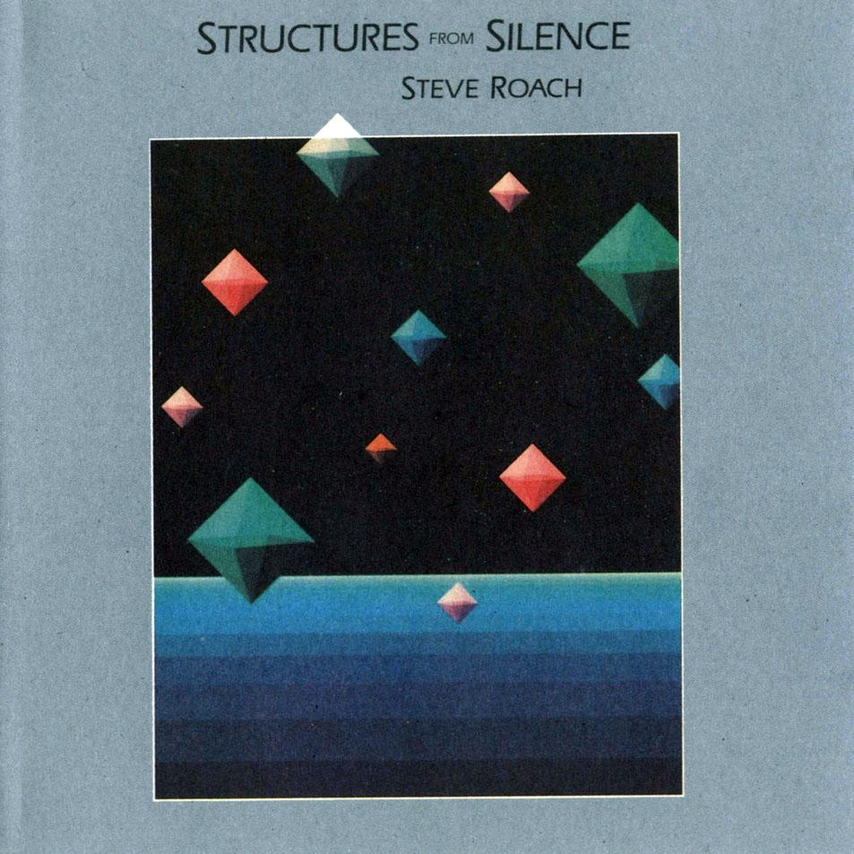

Texture is one of the most important features of ambient music. Composers often build pieces using layers of sustained sounds that gradually evolve over time. Textures may begin with only one or two musical lines before additional layers are introduced to create a richer and more immersive sound. Changes in texture are usually subtle, with sounds blending together rather than competing for attention. Thick textures and overlapping layers help create the spacious and atmospheric character associated with the style.
Example:
An ambient piece may begin with a thin texture before gradually adding synthesiser pads and additional layers to create a richer and more complex soundscape.